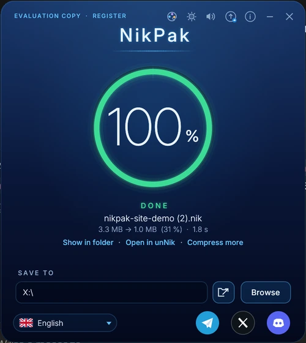
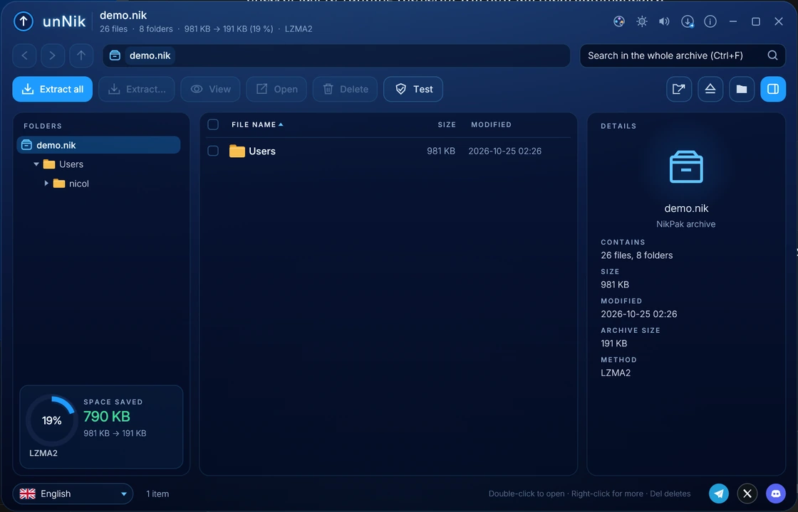
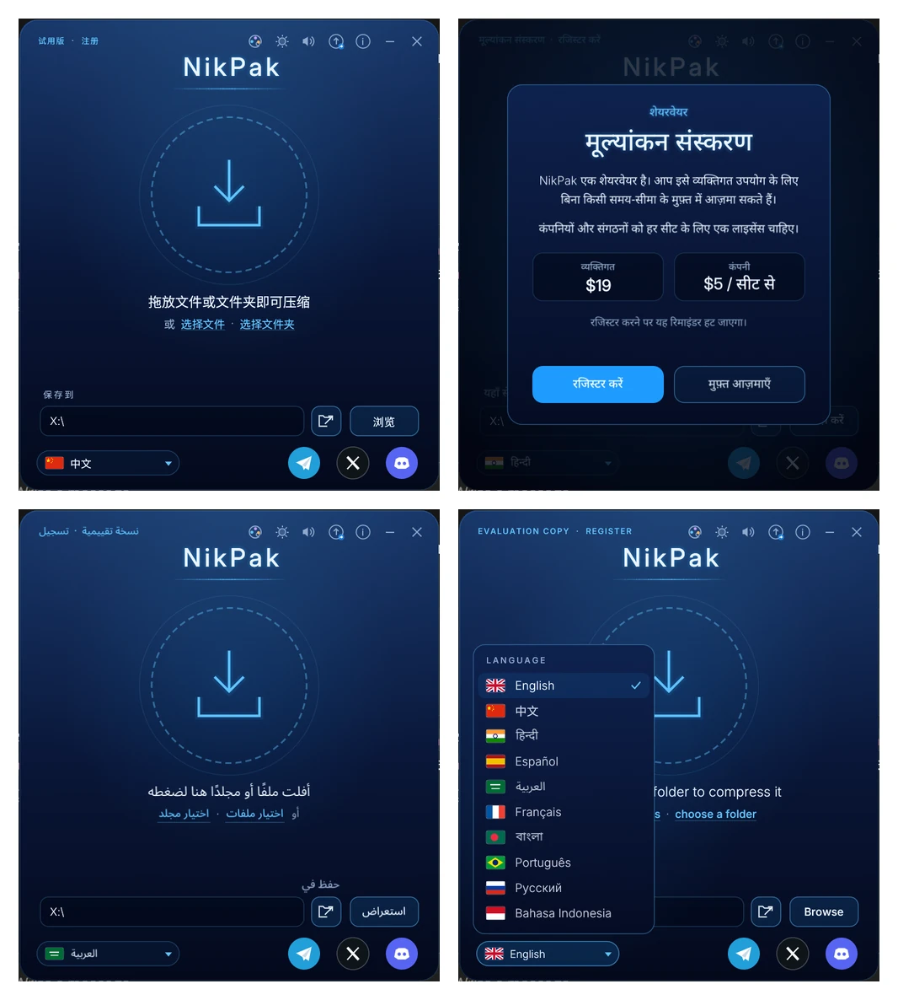

Archivos más pequeños que 7-Zip, RAR y ZIP.
NikPak reconoce fotos, música y documentos de oficina por su contenido y comprime cada archivo con el códec que mejor le conviene. Cada archivo cifrado resiste a los ordenadores cuánticos: solo cifrado simétrico de 256 bits, sin RSA ni curvas elípticas que un ordenador cuántico pueda romper.
Versión 1.6.3 · NikPak + unNik · Windows, macOS, Linux
Gratis para uso personal · unNik, el explorador de archivos, es gratis para todos
Descarga gratuita
Versión 1.6.3 · NikPak + unNik · Windows, macOS, Linux
Windows
macOS
Linux / Unix
Por qué NikPak
Un programa pequeño diseñado en torno a cuatro ideas: comprimir mejor, ir más rápido, proteger con criptografía moderna y funcionar igual en todas partes.
Resistente a la computación cuántica
Solo criptografía simétrica de 256 bits. No hay código RSA, de curvas elípticas ni Diffie-Hellman que un ordenador cuántico pueda romper.
Reconoce lo multimedia
Los archivos WAV, AIFF, ProTracker MOD y BMP se reconocen por su contenido, no por su nombre. Cada uno se prueba con varios filtros sin pérdida y gana el resultado más pequeño.
Recompresión de Office y PDF
Los flujos Deflate dentro de los archivos docx, xlsx, pptx, odt, epub, pdf, zip y gz se descomprimen, se comprimen mucho mejor y se reconstruyen bit a bit al extraer.
El más pequeño en el nivel máximo
Con -m5, NikPak elige LZMA2 o PPMd para cada bloque y ordena los archivos por tipo. Generó el archivo más pequeño de las cuatro herramientas en cada conjunto de prueba.
Rápido cuando lo necesita
En el nivel rápido -m2, 190 MB de código fuente se archivan en 1,7 s con un solo núcleo, 56 veces más rápido que el nivel predeterminado de 7-Zip.
Cifrado bien hecho
Argon2id con 64 MiB de memoria y cifrado autenticado XChaCha20-Poly1305. Los nombres, tamaños y fechas de los archivos siempre quedan ocultos, y cualquier manipulación siempre se detecta.
Tamaño del archivo en el nivel máximo
Porcentaje del tamaño original: cuanto más bajo, mejor. Un solo núcleo; cada archivo se volvió a extraer y se comparó byte a byte.
8 imágenes BMP
Música 48 kHz estéreo 24 bits
60 archivos de oficina
Datos generales (11.473 archivos)
Una ventana. Suelte y listo.
Suelte archivos o carpetas en la ventana de NikPak, o haga clic en el círculo para elegirlos. Se comprimen con la mejor compresión en un solo archivo. El anillo muestra el progreso y se vuelve verde cuando el archivo está listo.
- La mejor compresión (-m5) de forma predeterminada
- Recuerda la carpeta de destino
- Cancele en cualquier momento con Esc; no queda nada a medio escribir
- Nunca sobrescribe un archivo existente


unNik: el explorador de archivos gratuito
Haga doble clic en un archivo .nik y unNik lo abre. Recorra las carpetas, busque en todo el archivo, vea archivos de texto y binarios, extraiga una selección, elimine archivos o pruebe el archivo. unNik es freeware, tanto para particulares como para empresas.
- Árbol de carpetas, ruta de navegación, búsqueda con Ctrl+F
- Visor integrado para texto (con búsqueda) y archivos binarios
- Extraer todo o una selección, conservar ambos o reemplazar
- Cambie entre NikPak y unNik con un solo botón

55 aspectos
Oscuros, claros, divertidos o clásicos: el botón de aspectos cambia los colores de NikPak y unNik, y el botón sol / luna pasa de oscuro a claro con un clic.
")


Habla su idioma
Los diez idiomas más hablados del mundo, con una composición tipográfica real para el hindi, el bengalí y el árabe. La primera vez, NikPak sigue el idioma del sistema; NikPak y unNik siempre comparten la misma elección.
English · 中文 · हिन्दी · Español · العربية · Français · বাংলা · Português · Русский · Bahasa Indonesia

Una línea de comandos que los usuarios de RAR ya conocen
a, x, e, l, t, @listfiles, -p, -o+, -y: interfaces como Total Commander pueden manejar nikpak.exe igual que rar.exe. Sus códigos de salida claros lo convierten en una opción sólida para scripts y copias de seguridad.
nikpak a backup.nik C:\Docs\ Photos\ nikpak a -p secret.nik Taxes2026\ nikpak x backup.nik C:\Restore\ nikpak l backup.nik *.pdf nikpak t secret.nik nikpak mt song.wav tracker.mod photo.bmp
Gratis para usted. Justo para las empresas.
Los particulares pueden usar NikPak gratis, sin límite de tiempo, para uso personal; no hay nada desactivado. Las empresas y organizaciones tienen 40 días de evaluación y luego una licencia por puesto.
Honestos sobre los límites
RAR sigue ofreciendo registros de recuperación, archivos multivolumen y autoextraíbles, y décadas de uso. NikPak es nuevo y aún no ha sido auditado de forma independiente. Lo decimos claramente, y la hoja de ruta muestra lo que viene. Hoja de ruta →
Pruebe NikPak ahora
Un solo instalador instala NikPak y unNik. No hace falta registrarse para empezar.